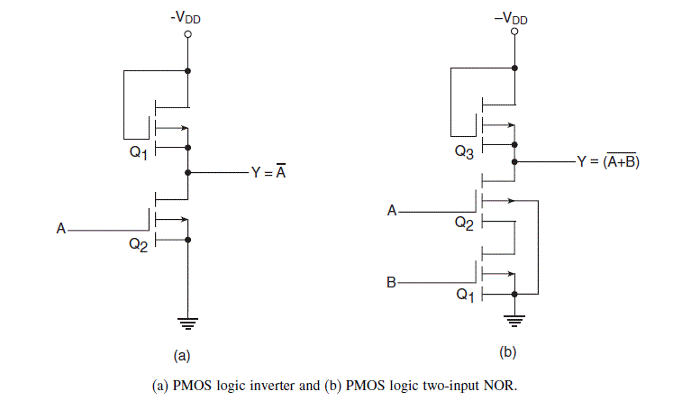
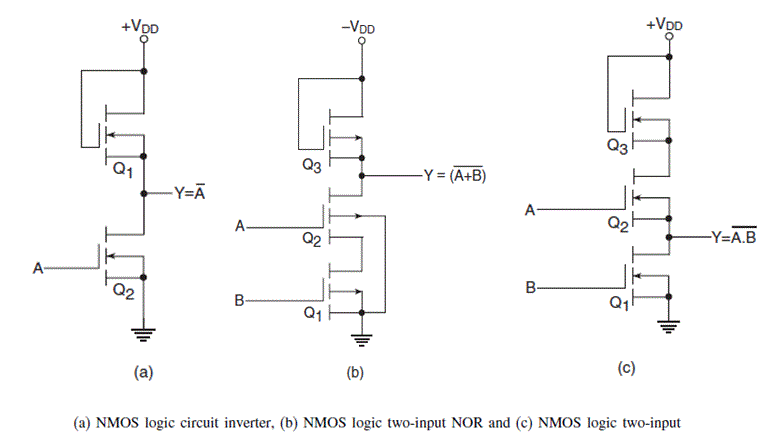

PMOS Logic

The PMOS logic family uses P-channel MOSFETS. Figure (a) shows an inverter circuit using PMOS logic. MOSFET Q1 acts as an active load for the MOSFET switch Q2. For the circuit shown,
GND and −VDD respectively represent a logic ‘1’ and a logic ‘0’ for a positive logic system. When the input is grounded (i.e. logic ‘1’), Q2 remains in cut-off and −VDD appears at the output throughthe conducting Q1.When the input is at −VDD or near −VDD, Q2 conducts and the output goes to near-zero potential (i.e. logic ‘1’).Figure (b) shows a PMOS logic based two-input NOR gate. In the logic arrangement of Fig. (b), the output goes to logic ‘1’ state (i.e. ground potential) only when both Q1 and Q2 are conducting. This is possible only when both the inputs are in logic ‘0’ state. For all other possible input combinations, the output is in logic ‘0’ state, because, with either Q1 or Q2 nonconducting, the output is nearly −VDD through the conducting Q3. The circuit of Fig.(b) thus behaves like a two-input NOR gate in positive logic. It may be mentioned here that the MOSFET being used as load
[Q1 in Fig. (a) and Q3 in Fig. (b)] is designed so as to have an ON-resistance that is much greater than the total ON-resistance of the MOSFETs being used as switches [Q2 in Fig. (a) And
Q1 and Q2 in Fig.(b)].
NMOS Logic

The NMOS logic family uses N-channel MOSFETS. N-channel MOS devices require a smaller chip area per transistor compared with P-channel devices, with the result that NMOS logic offers a higher density. Also, owing to the greater mobility of the charge carriers in N-channel devices, the NMOS logic family offers higher speed too. It is for this reason that most of the MOS memory devices and microprocessors employ NMOS logic or some variation of it such as VMOS, DMOS and HMOS. VMOS, DMOS and HMOS are only structural variations of NMOS, aimed at further reducing the propagation delay. Figures (a), (b) and (c) respectively show an inverter, a two-input NOR and a two-input NAND using NMOS logic. The logic circuits are self-explanatory.
 by
by